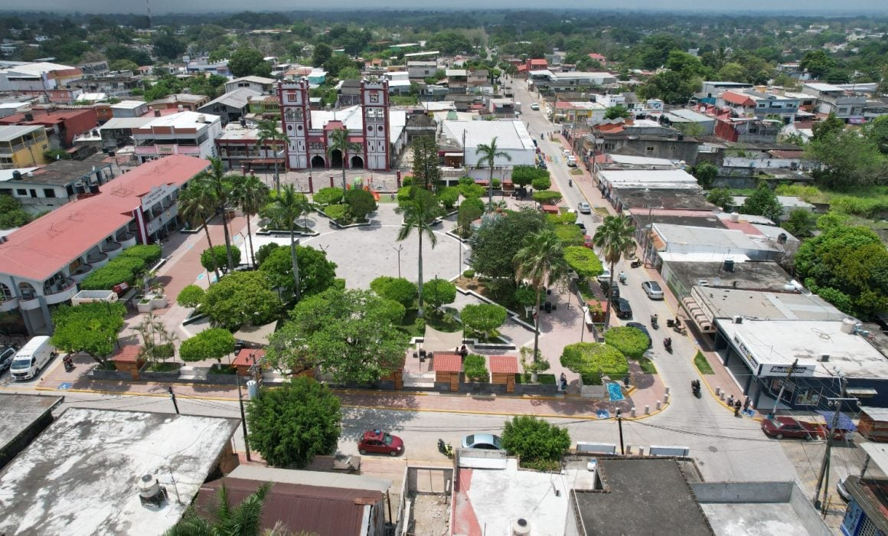
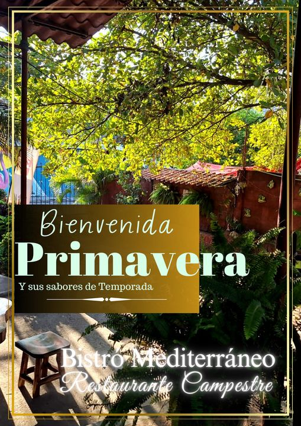
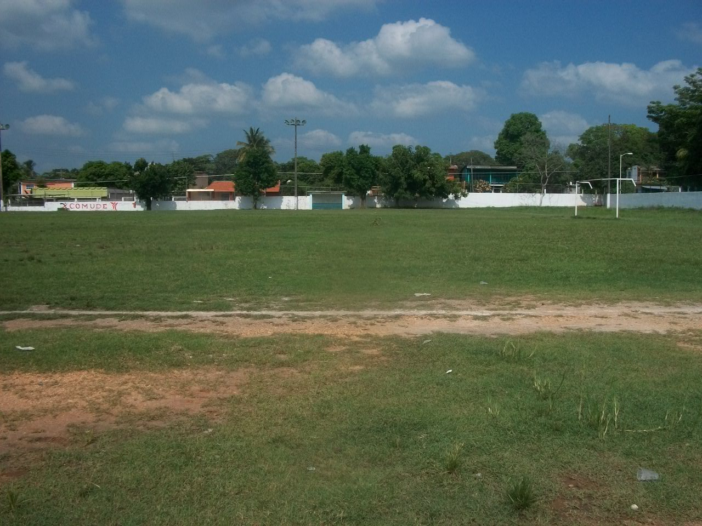
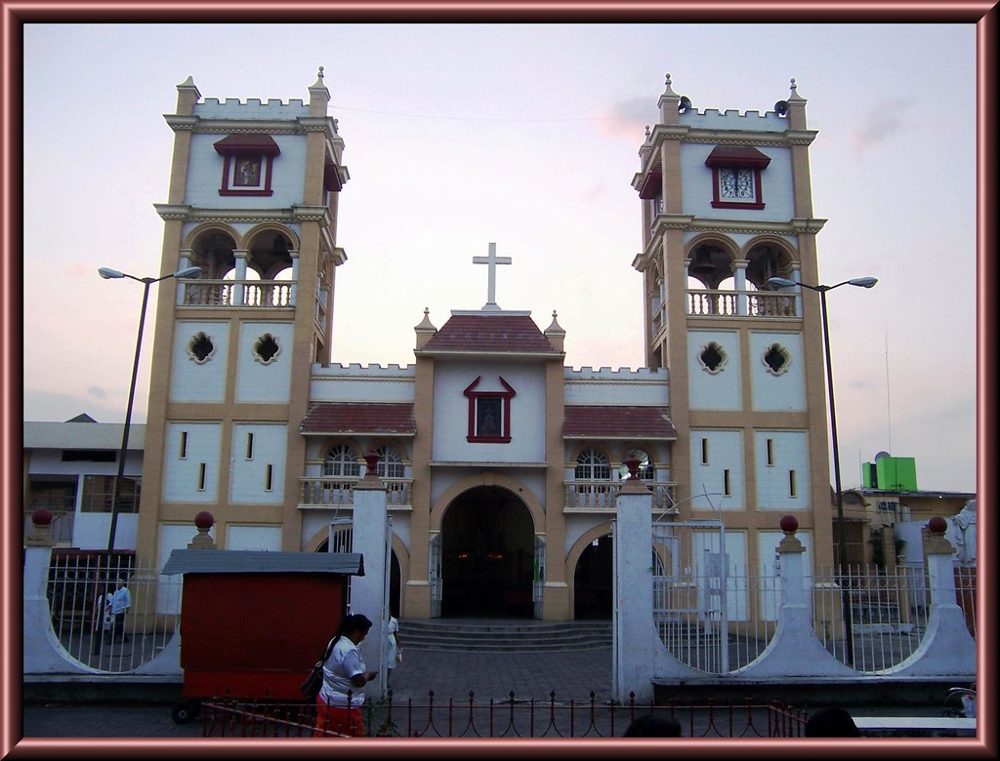

PARQUE
Unos de los entretenimientos que tenemos en tres valles es el parque Miguel Hidalgo en donde las personas se reúnen para convivir, jugar etc. También encontraras locales de venta de la cual venden comidas y snacks y en mi opinión si quieres pasar un rato agradable con tus amigos es lo ideal.

CAFECITO
A un metro del parque Hidalgo encontraras este restaurante llamado el Cafecito del cual su comida es buena y es un lugar muy agradable para pasarlo con tus amigos y familiares.
MEDITERRANEO
El mediterráneo se encuentra por la calle del IMMS en un callejón, este restaurante es muy bonito en su decoración y aunque su comida es buena pero su servicio es algo tardado, pero es otro lugar en el que te la puedes pasar con amigos y familia en pocas palabras es un lugar agradable.

CAMPO DEPORTIVO
En este lugar encontraras un gran campo y en ella podrás encontrar equipos de fútbol y en la parte de abajo podrás ver dos canchas de basquetbol y un pequeño campo de fútbol, también encontraras un espacio de juego para los niños.

CASA DE LA CULTURA
Como su nombre lo indica esta es un lugar que inculca a los niños, jóvenes y adulto lo que es la cultura como, la música, pintura y bailes tradicionales de Veracruz y otras regiones

PARROQUIA CRISTO REY
Es un lugar importante para la comunidad catolica, donde los fieles se reunen para celebrar su fe, participar en ceremonias religiosas y recibir orientacion espiritual.
